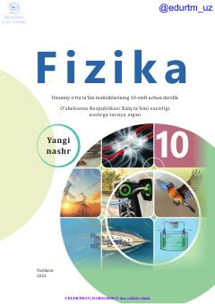

1F10-sinf o'quvchilari uchun mo'ljallangan rasmiy fizika darsligi.
Ushbu darslik umumiy o'rta ta'lim maktablarining 10-sinf o'quvchilari uchun mo'ljallangan bo'lib, fizika fanidan fundamental tushunchalar, dinamika, statika, mexanik tebranishlar va to'lqinlarni o'rgatadi. Kitobda nazariy mavzular bilan bir qatorda masalalar yechish va laboratoriya ishlari ham o'rin olgan.